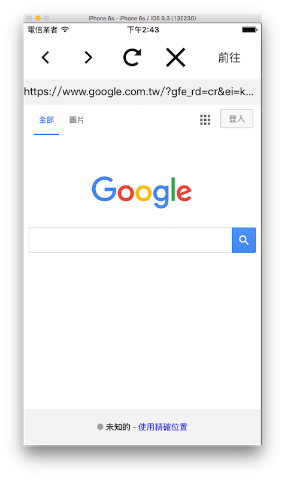

網頁 UIWebView
應用程式中有時如果需要載入一些網站內容時，可以使用 UIWebView 元件來呈現，這是一個內建的網頁瀏覽器，你可以很快速的建立起一個網頁視圖。
在 iOS 8 之後，Apple 推出了一個基於 WebKit 的新工具WKWebView，用來替代存在已久的UIWebView。 WKWebView 最明顯的優點是記憶體使用量會比 UIWebView 來的少很多，使用上也與 UIWebView 差異不大，所以這節主要會介紹如何使用 WKWebView 。
以下是本節的目標，一個超輕量瀏覽器，上方有五個按鈕，功能分別為上一頁、下一頁、重新讀取、取消讀取及前往網址，以及一個網址列與 WKWebView ：

首先在 Xcode 裡，新建一個 Single View Application 類型的專案，取名為 ExUIWebView 。再以加入檔案的方式加入四張按鈕的圖片。
先為ViewController建立三個屬性，並引入WebKit：
import WebKit
class ViewController: UIViewController {
var myTextField :UITextField!
var myWebView :WKWebView!
var myActivityIndicator:UIActivityIndicatorView!
// 省略
}
以及在viewDidLoad()中取得預設尺寸，以供後續使用，如下：
// 預設尺寸
let goWidth = 100.0
let actionWidth =
( Double(fullScreenSize.width) - goWidth ) / 4
前置作業
一開始先在viewDidLoad()裡建立五個 UIButton 及一個用來輸入網址的 UITextField ：
// 建立五個 UIButton
var myButton = UIButton(frame: CGRect(
x: 0, y: 20,
width: actionWidth, height: actionWidth))
myButton.setImage(
UIImage(named: "back")!, for: .normal)
myButton.addTarget(
self,
action: #selector(ViewController.back),
for: .touchUpInside)
self.view.addSubview(myButton)
myButton = UIButton(frame: CGRect(
x: actionWidth, y: 20,
width: actionWidth, height: actionWidth))
myButton.setImage(
UIImage(named: "forward")!, for: .normal)
myButton.addTarget(
self,
action: #selector(ViewController.forward),
for: .touchUpInside)
self.view.addSubview(myButton)
myButton = UIButton(frame: CGRect(
x: actionWidth * 2, y: 20,
width: actionWidth, height: actionWidth))
myButton.setImage(
UIImage(named: "refresh")!, for: .normal)
myButton.addTarget(
self,
action: #selector(ViewController.reload),
for: .touchUpInside)
self.view.addSubview(myButton)
myButton = UIButton(frame: CGRect(
x: actionWidth * 3, y: 20,
width: actionWidth, height: actionWidth))
myButton.setImage(
UIImage(named: "stop")!, for: .normal)
myButton.addTarget(
self,
action: #selector(ViewController.stop),
for: .touchUpInside)
self.view.addSubview(myButton)
myButton = UIButton(frame: CGRect(
x: Double(fullScreenSize.width) - goWidth, y: 20,
width: goWidth, height: actionWidth))
myButton.setTitle("前往", for: .normal)
myButton.setTitleColor(UIColor.black, for: .normal)
myButton.addTarget(
self,
action: #selector(ViewController.go),
for: .touchUpInside)
self.view.addSubview(myButton)
// 建立一個 UITextField 用來輸入網址
myTextField = UITextField(frame: CGRect(
x: 0, y: 20.0 + CGFloat(actionWidth),
width: fullScreenSize.width, height: 40))
myTextField.text = "https://www.google.com"
myTextField.backgroundColor =
UIColor(red: 0.95, green: 0.95, blue: 0.95, alpha: 1)
myTextField.clearButtonMode = .whileEditing
myTextField.returnKeyType = .go
myTextField.delegate = self
self.view.addSubview(myTextField)
接著設置 UITextField 的委任需要的協定：
class ViewController:
UIViewController, UITextFieldDelegate {
// 省略
}
再於ViewController中，將按下按鈕及鍵盤執行動作的方法加入：
@objc func back() {
// 上一頁
myWebView.goBack()
}
@objc func forward() {
// 下一頁
myWebView.goForward()
}
@objc func reload() {
// 重新讀取
myWebView.reload()
}
@objc func stop() {
// 取消讀取
myWebView.stopLoading()
// 隱藏環狀進度條
myActivityIndicator.stopAnimating()
}
@objc func go() {
// 隱藏鍵盤
self.view.endEditing(true)
// 前往網址
let url = URL(string:myTextField.text!)
let urlRequest = URLRequest(url: url!)
myWebView.load(urlRequest)
}
func textFieldShouldReturn(_ textField: UITextField) -> Bool {
self.go()
return true
}
建立 WKWebView
在viewDidLoad()裡建立 WKWebView 以及讀取網頁時顯示的環狀進度條。在viewDidLoad()的最後，先讀取一次網址：
// 建立 WKWebView
myWebView = WKWebView(frame: CGRect(
x: 0, y: 60.0 + CGFloat(actionWidth),
width: fullScreenSize.width,
height:
fullScreenSize.height - 60
- CGFloat(actionWidth)))
// 設置委任對象
myWebView.navigationDelegate = self
// 加入到畫面中
self.view.addSubview(myWebView)
// 建立環狀進度條
myActivityIndicator = UIActivityIndicatorView(
activityIndicatorStyle: .gray)
myActivityIndicator.center = CGPoint(
x: fullScreenSize.width * 0.5,
y: fullScreenSize.height * 0.5)
self.view.addSubview(myActivityIndicator);
// 先讀取一次網址
self.go()
為了讓進度條可以顯示及隱藏，必須設定 WKWebView 的委任並實作兩個方法，首先加上委任需要的協定：
class ViewController: UIViewController,
UITextFieldDelegate, WKNavigationDelegate {
// 省略
}
兩個委任需要實作的方法，分別是開始讀取網址時執行動作，以及讀取網址完成時執行動作：
func webView(_ webView: WKWebView,
didStartProvisionalNavigation navigation: WKNavigation!) {
// 顯示進度條
myActivityIndicator.startAnimating()
}
func webView(_ webView: WKWebView,
didFinish navigation: WKNavigation!) {
// 隱藏進度條
myActivityIndicator.stopAnimating()
// 更新網址列的內容
if let currentURL = myWebView.url {
myTextField.text = currentURL.absoluteString
}
}
以上便為本節範例的內容。
讀取靜態 HTML 原始碼
WKWebView 還有另一個功能，可以讓你讀取 HTML 原始碼並顯示出來，使用loadHTMLString()方法，如下：
// 你也可以設置 HTML 內容到一個常數
// 用來載入一個靜態的網頁內容
let content =
"<html><body><h1>Hello World !</h1></body></html>"
myWebView.loadHTMLString(content, baseURL: nil)
圖片來源
- https://www.iconfinder.com/icons/211686/arrow_back_icon
- https://www.iconfinder.com/icons/211688/arrow_forward_icon
- https://www.iconfinder.com/icons/293657/x_icon
- https://www.iconfinder.com/icons/293697/refresh_icon
範例
本節範例程式碼放在 uikit/uiwebview